Reporte Técnico: Trabajo 3: aplicaciones de redes neuronales a datos tabulares
Autores: Jorge Humberto Gaviria Botero, Daimler Anave, Juan Pablo Chamorro, Andrés Felipe Diez
Institución: Universidad Nacional de Colombia - Facultad de Minas
Curso: Redes Neuronales y Algoritmos Bioinspirados
Entregables solicitados:
Video,
Herramienta Web
y
Repositorio
Módulo 1
Introducción
El objetivo de este módulo es predecir la demanda diaria de transporte en rutas de bus hacia Nairobi durante los próximos 30 días, con el fin de optimizar la asignación de vehículos y personal por parte de la empresa. Para ello se utilizó el dataset de Mobiticket, que contiene 51,645 registros de tickets vendidos entre octubre de 2017 y abril de 2018 en 17 rutas de origen. Dado que cada registro representa un ticket individual, fue necesario transformar los datos en series de tiempo agregando la demanda diaria por ruta.
Inicialmente se exploró un enfoque basado en redes LSTM y GRU, arquitecturas recurrentes ampliamente utilizadas en problemas de series de tiempo (Hochreiter & Schmidhuber, 1997). Sin embargo, la cantidad limitada de datos históricos (186 días) resultó insuficiente para entrenar modelos secuenciales con miles de parámetros sin incurrir en sobreajuste. Esto motivó un cambio de enfoque hacia un modelo denso (MLP) alimentado con features tabulares para así reducir drásticamente el número de parámetros y mejorar la robustez de las predicciones.
Dataset
Como se mencionó anteriormente, para este módulo se utilizó el dataset Mobiticket, el cual contiene 51,645 registros de tickets de bus vendidos entre octubre de 2017 y abril de 2018 en rutas destino a Nairobi,Kenya El dataset cuenta con 10 columnas, cuyas características se describen a continuación:
Columna
| Columna | Tipo | Descripción |
|---|---|---|
| ride_id | int | Identificador único del viaje |
| seat_number | str | Número de asiento asignado |
| payment_method | str | Método de pago (Mpesa) |
| payment_receipt | str | Código de recibo de pago |
| travel_date | str | Fecha del viaje (formato DD-MM-YY) |
| travel_time | str | Hora de salida del viaje |
| travel_from | str | Ciudad de origen (17 rutas únicas) |
| travel_to | str | Ciudad de destino (siempre Nairobi) |
| car_type | str | Tipo de vehículo (Bus o Shuttle) |
| max_capacity | int | Capacidad máxima del vehículo |
Es importante señalar que el dataset no presentó valores nulos en ninguna de sus columnas. Sin embargo, su estructura original no es directamente utilizable para un modelo de series de tiempo, ya que cada fila representa un ticket individual vendido, no una medida de demanda agregada. Esto obligó a realizar las siguientes transacciones
El primer paso consistió en convertir la columna travel_date del formato texto (DD-MM-YY) a un objeto datetime, lo cual permitió operar con rangos de fechas y extraer features temporales.Dado que cada fila del dataset original representa un ticket vendido, fue necesario transformar los datos en una serie de tiempo. Para ello se agruparon los registros por fecha y ruta de origen, contando el número de tickets vendidos por día en cada ruta. Posteriormente, se generó un índice completo de todas las combinaciones posibles de fecha × ruta, rellenando con cero aquellos días en los que no se registraron ventas para una ruta determinada. Esto ultimo es fundamental para garantizar la continuidad temporal de la serie.
El dataset original contiene 17 rutas de origen, sin embargo, muchas de ellas presentan un volumen de demanda extremadamente bajo. Por ejemplo, rutas como Oyugis (5 tickets totales), Kendu Bay (1 ticket) o Sori (55 tickets en 186 días) carecen de suficientes datos para que el modelo pueda aprender patrones significativos. Por esta razón se estableció un umbral mínimo de 500 tickets totales, resultando en 10 rutas seleccionadas para el modelado: Kisii, Migori, Homa Bay, Sirare, Rongo, Kehancha, Awendo, Kijauri, Keroka y Nyachenge.
Las rutas seleccionadas presentan escalas de demanda muy dispares: mientras Kisii registra un promedio de aproximadamente 122 tickets diarios, Keroka apenas alcanza 5. Esta diferencia de escala genera problemas durante el entrenamiento, ya que el modelo tiende a priorizar las rutas de mayor volumen. Para mitigar este efecto se aplicó una transformación logarítmica log(1 + x), para así comprimir los valores altos y expandir los bajos, estabilizando la varianza entre rutas. Adicionalmente, se aplicó un escalado MinMaxScaler independiente por cada ruta, normalizando los valores al rango [0, 1]. El uso de un scaler por ruta garantiza que cada serie temporal sea tratada en su propia escala, evitando que rutas de alto volumen dominen el aprendizaje.
Para mejorar el comportamiento del modelo se decidió que en lugar de enviar las series de tiempo crudas como se haría en un enfoque tradicional, se diseñaron un conjunto de features tabulares que capturan información temporal de forma explícita, obteniendo un total de 13.
- Lags temporales (7): demanda normalizada de los 1 a 7 días anteriores. Estos capturan la autocorrelación de corto plazo, es decir, la relación directa entre la demanda reciente y la demanda actual.
- Media móvil 7 días: promedio de la última semana, captura la tendencia local.
- Media móvil 14 días: promedio de las últimas dos semanas, captura tendencias más suaves.
- Desviación estándar 7 días: mide la volatilidad reciente de la demanda.
- Día de la semana (sin/cos): se codificó el día de la semana mediante funciones seno y coseno, una técnica que preserva la naturaleza cíclica de esta variable (el domingo y el lunes están "cerca" en el ciclo semanal, algo que una codificación numérica 0-6 no captura correctamente).
- Ruta normalizada: identificador numérico de la ruta escalado al rango [0, 1], permitiendo que el modelo distingue entre rutas.
La división de los datos en conjuntos de entrenamiento y prueba se realizó de forma temporal y por ruta: para cada una de las 10 rutas, el primer 80% de las observaciones se asignó al entrenamiento y el 20% restante al test. Esto garantiza que todas las rutas estén representadas tanto en train como en test.
Análisis Exploratorio y Modelo
Previo al diseño del modelo, se realizó un análisis exploratorio para identificar los patrones temporales de la demanda. Al visualizar la serie de demanda total con medias móviles de 7 y 30 días (Figura 1), se observa una tendencia ligeramente creciente con fluctuaciones diarias considerables.
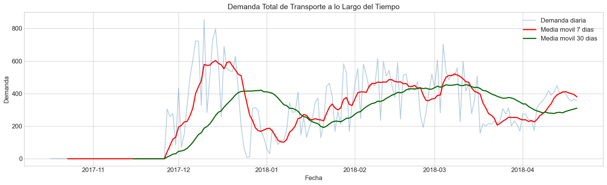
Al desagregar por ruta (Figura 2), se evidencia que cada una posee escalas y comportamientos distintos: Kisii concentra el mayor volumen mientras que rutas como Keroka o Nyachenge presentan demandas bajas y esporádicas.
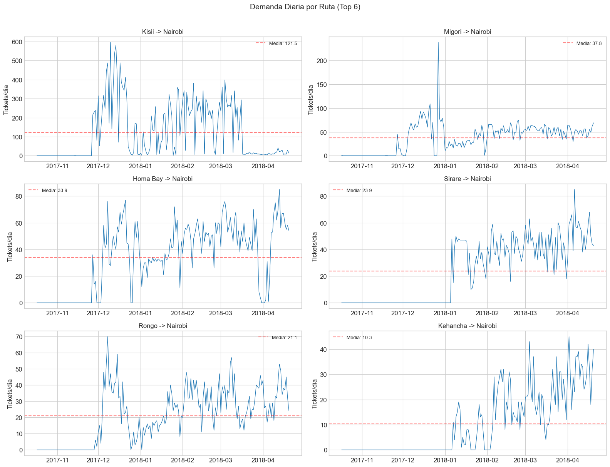
El análisis por día de la semana (Figura 3) revela un patrón de estacionalidad semanal claro, consistente con el comportamiento esperado en transporte interurbano. El heatmap de demanda promedio por ruta y día (Figura 15) refuerza esta observación, mostrando que dicho patrón varía según la ruta,algunas concentran demanda hacia el fin de semana mientras otras la distribuyen más uniformemente. Estos hallazgos justificaron la inclusión del día de la semana como feature cíclico y la necesidad de un modelo que distinga entre rutas.
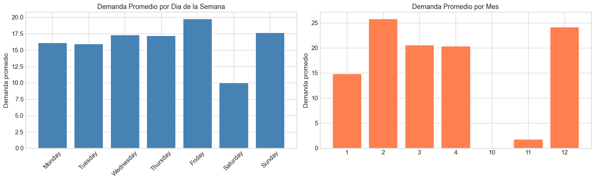
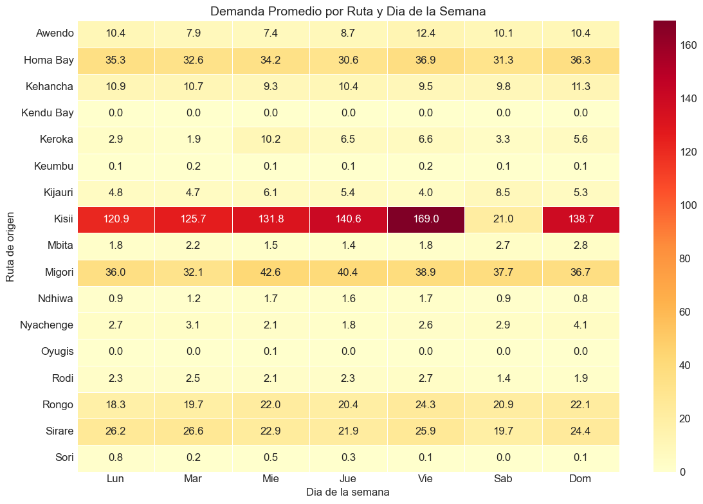
Dada la cantidad limitada de datos disponibles (186 días, 10 rutas), se optó por un modelo denso (MLP) global con una arquitectura compacta:
Dense(32, ReLU) → Dropout(0.2) → Dense(16, ReLU) → Dropout(0.2) → Dense(1),
El modelo se entrena con los datos de todas las rutas simultáneamente, recibiendo la ruta como un feature más, lo cual incrementa el volumen efectivo de entrenamiento. Al operar sobre features tabulares en lugar de secuencias crudas, el modelo extrae la información temporal de forma explícita a través de los lags y medias móviles, sin necesidad de arquitecturas recurrentes más costosas en parámetros. El modelo fue entrenado con el optimizador Adam, MSE como función de pérdida, y callbacks de EarlyStopping (patience=20) y ReduceLROnPlateau para ajustar la tasa de aprendizaje dinámicamente. El resultado fue un conjunto de 1,380 muestras de entrenamiento y 350 de test.
Resultados y evaluación
Las curvas de entrenamiento (Figura 5) muestran una convergencia estable, con las pérdidas de entrenamiento y validación disminuyendo de forma consistente sin divergencia significativa entre ambas, lo cual indica que el modelo no presenta sobreajuste severo.
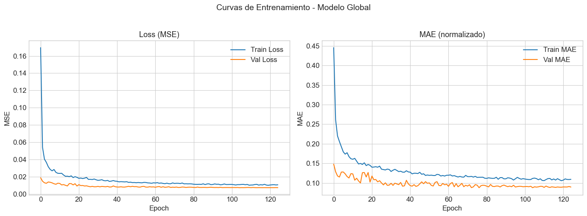
Para evaluar el desempeño del modelo se calcularon tres métricas por ruta: RMSE (raíz del error cuadrático medio), MAE (error absoluto medio) y MAPE (error porcentual absoluto medio). Los resultados se resumen en la siguiente tabla:
| Ruta | Muestras | RMSE | MAE | MAPE (%) |
|---|---|---|---|---|
| Kissi | 35 | 18.26 | 11.17 | 111.17 |
| Migori | 35 | 9.39 | 7.78 | 17.51 |
| Homa Bay | 35 | 21.19 | 15.28 | 99.66 |
| Sirare | 35 | 15.80 | 12.14 | 24.54 |
| Rongo | 35 | 9.21 | 7.69 | 24.63 |
| Kehancha | 35 | 9.76 | 7.70 | 27.04 |
| Kehancha | 35 | 13.88 | 10.43 | 32.11 |
| Kijauri | 35 | 5.14 | 4.05 | 62.21 |
| Keroka | 35 | 1.40 | 1.04 | 49.44 |
| Nyachenge | 35 | 3.34 | 2.60 | 50.23 |
| Promedios Ponderados | 10.74 | 7.99 | 49.85% |
El modelo muestra un desempeño heterogéneo según la ruta. Rutas como Migori (MAPE 17.5%), Sirare (24.5%) y Rongo (24.6%) presentan predicciones razonablemente precisas, lo cual se explica por su demanda relativamente estable y con patrones semanales bien definidos. En contraste, rutas como Kisii (MAPE 111%) y Homa Bay (99.7%) exhiben errores significativamente mayores, atribuibles a una alta variabilidad y picos de demanda impredecibles que el modelo no logra capturar con los features disponibles. Por su parte, rutas de baja demanda como Keroka y Nyachenge presentan MAPE elevado debido a que valores reales cercanos a cero inflan esta métrica proporcionalmente. Los promedios ponderados globales resultaron en un RMSE de 10.74, MAE de 7.99 y MAPE de 49.85%.
Las gráficas de predicción vs demanda real por ruta (Figura 6) permiten visualizar estos comportamientos: en las rutas con mejor desempeño, el modelo sigue adecuadamente la tendencia y los ciclos semanales, mientras que en las rutas problemáticas se observan subestimaciones frecuentes ante picos inesperados. La distribución de residuos (Figura 7) confirma que los errores se distribuyen de forma aproximadamente centrada en cero para las rutas principales, sin sesgos sistemáticos evidentes.
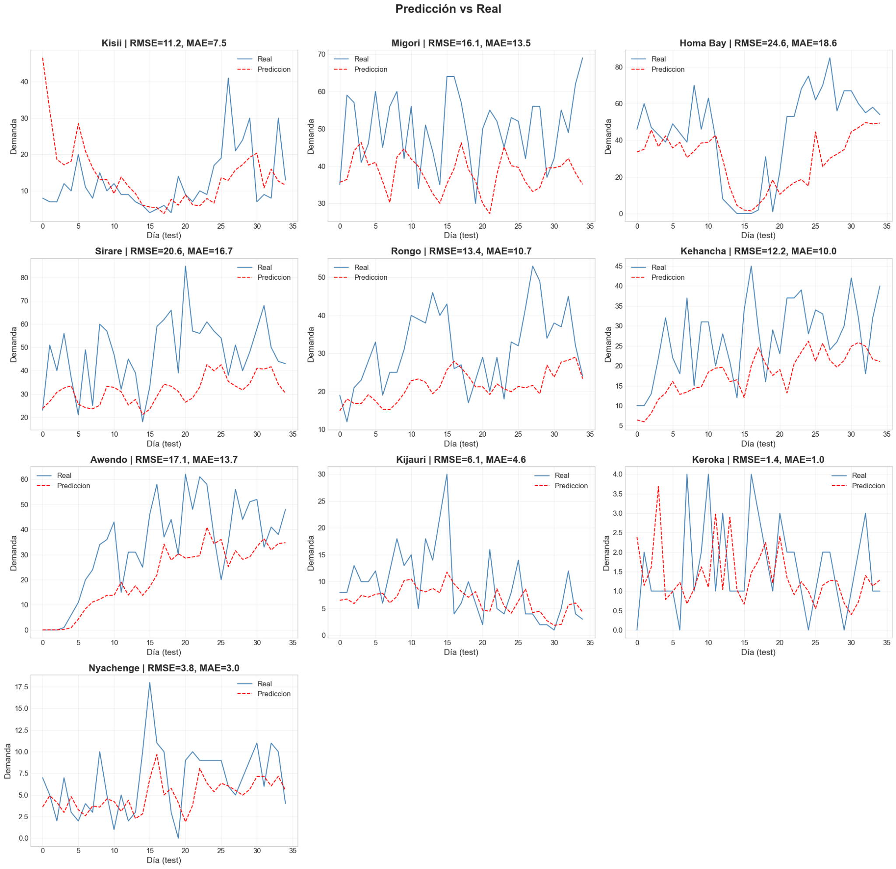
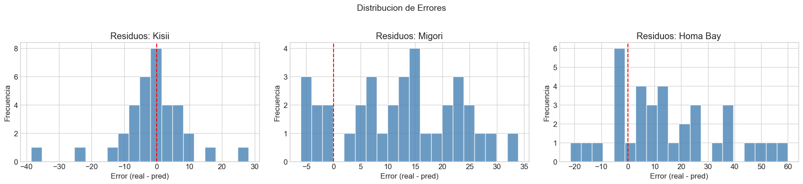
Finalmente, se generaron predicciones de demanda para los 30 días posteriores al último dato disponible (21 de abril al 20 de mayo de 2018) utilizando un esquema de predicción recursiva: cada día predicho se incorpora al historial y alimenta la predicción del día siguiente. Esta estrategia permite proyectar a futuro sin datos reales adicionales, aunque implica una acumulación progresiva de error a medida que se avanza en el horizonte de predicción.
Las predicciones (Figura 8) muestran comportamientos coherentes con los patrones históricos observados: las rutas de alto volumen como Migori mantienen una demanda estable alrededor de 64 tickets diarios, mientras que rutas más pequeñas como Kijauri y Nyachenge se mantienen en rangos bajos pero consistentes. Se observa que el modelo preserva el patrón de estacionalidad semanal en las proyecciones, lo cual aporta confianza en la utilidad práctica de las predicciones para la planificación operativa de la empresa.
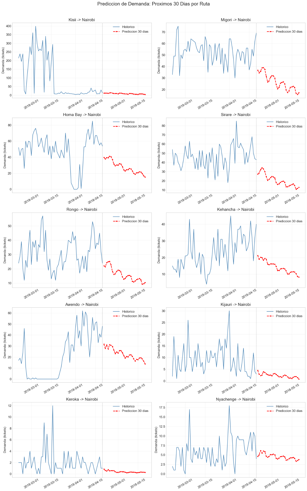
Módulo 2
- Descripción del problema
Entre las distintas causas de accidentes de tránsito, las principales son de factor humano, una de ellas son las distracciones y pueden provenir de fuentes tecnológicas, técnicas o humanas, el objetivo de este módulo es desarrollar un clasificador de imágenes que identifique automáticamente el comportamiento del conductor, permitiendo detectar comportamientos de alto riesgo y generar alertas, están divididos en 5 clases: conducción segura, voltear, textear en el teléfono, hablar por llamada y otras actividades.
- Dataset
- El dataset usado en este módulo consiste en imágenes tomadas en condiciones reales de conducción, tanto en autos privados como en buses públicos, recolectadas en Ashulia, Dhaka y Bangladesh en octubre de 2024.
- Consiste de 5 carpetas representando una clase: safe_driving, turning, texting_phone, talkin_phone, other_activities.
- Las proporciones de train/validation/test son de 70/15/15% respectivamente por cada clase.
| Clase | Train | Val | Test | Total |
|---|---|---|---|---|
| safe_driving | 1175 | 251 | 253 | 1679 |
| texting_phone | 1092 | 234 | 235 | 1561 |
| talking_phone | 1059 | 226 | 228 | 1513 |
| turning | 937 | 200 | 202 | 1339 |
| other activities | 828 | 177 | 179 | 1184 |
| Total | 5091 | 1088 | 1097 | 7276 |
- Transformaciones y DataLoaders
Se realizaron distintas transformaciones para ayudar a que el modelo generalice mejor antes las distintas condiciones de las imágenes tales como la iluminación, ángulos de cámara, calidad, etc.
- Transformaciones de entrenamiento:
- Resize 256x256
- RandomResizedCrop 224x224
- RandomHorizontalFlip
- RandomRotation +/- 10°
- ColorJitter (fluctuación de color, brillo y contraste)
- ToTensor
-
Normalización con media y desviación de ImageNet
-
Transformaciones de validación/test:
- Resize 256x256
- Centercrop 224x224
- Normalización.
- DataLoaders:
Carga los datos por lotes y optimiza el uso de memoria. - Batch_size=16
- Shuffle \= True para entrenamiento
-
Num workers \= 2
-
Modelo ResNet18
Se utilizó ResNet18 por ser ligera y eficiente, con arquitectura basada en residual blocks que evitan el problema de gradientes que se desvanecen en redes profundas.
Transfer learning: la red preentrenada en ImageNet permite aprender patrones generales (bordes, manos, objetos) antes de ajustar la última capa para las clases del conductor.
- Entrenamiento
- Épocas: 10
- Optimizer: Adam
- Loss: CrossEntropyLoss
- Dispositivo: GPU si disponible
Curvas de entrenamiento
- La pérdida disminuye constantemente en train y validation, convergiendo cerca de 0.42 - 0.44.
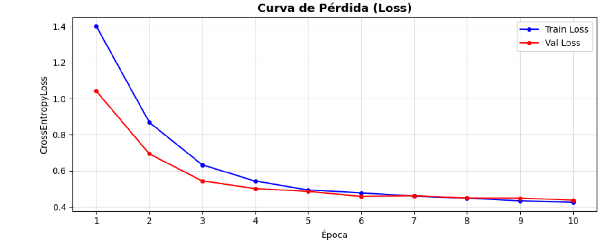
- La exactitud aumenta y se estabiliza cerca de 92 - 93% para train y validation, indicando un buen aprendizaje y poco sobreajuste.
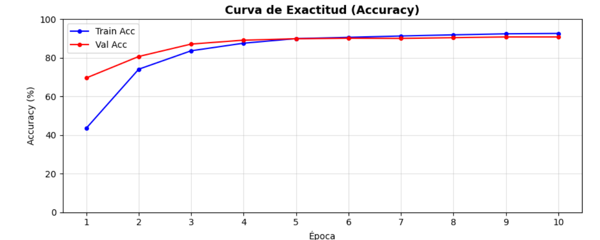
- Evaluación y métricas
Métricas globales
- Accuracy: 92.71%
- F1-score: 92.41%
- Precision weighted: 92.88%
- Recall weighted: 92.71%
Métricas por clase:
| Clase | Precision | Recall | F1-score |
|---|---|---|---|
| texting_phone | 92.81% | 94.89% | 96.33% |
| talking_phone | 97.29% | 94.30% | 95.77% |
| safe_driving | 93.85% | 90.51% | 92.15% |
| turning | 88.64% | 96.53% | 92.42% |
| other_activities | 84.24% | 86.59% | 85.40% |
Las clases más críticas como lo son texting_phone y talking phone se detectan con alta precisión. Otras clases como other_activities son más débiles ya que pueden representar comportamientos muy variados, siendo más difícil para el modelo poder clasificarla.
- Matriz de confusión
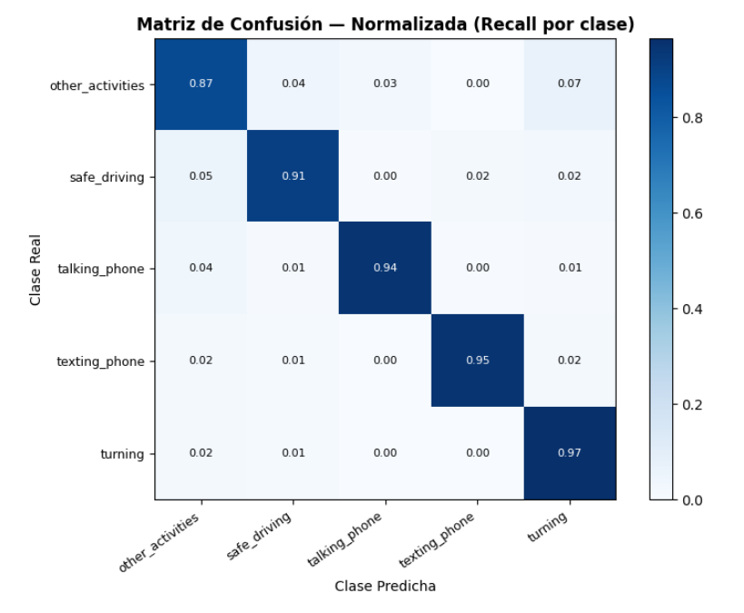
- Las clases más fuertes son textin_phone y talking_phone, con diagonales altas, lo que significa que el modelo es capaz de identificar muy bien cuando alguien usa el celular.
-
Turning y safe_driving se confunden levemente, lo que tiene sentido pues algunos giros leves pueden parecer conducción normal, other_activities presenta más confusión ya que agrupa comportamientos muy variados.
-
Guardado del modelo
Archivo generado: best_driver_distraction_resnet18.pth, peso de 44.8MB
Contiene: pesos entrenados, número de clases, nombres de clases y configuración de imagen
Permite cargar el modelo directamente en la web o en pruebas rápidas.
- Pruebas
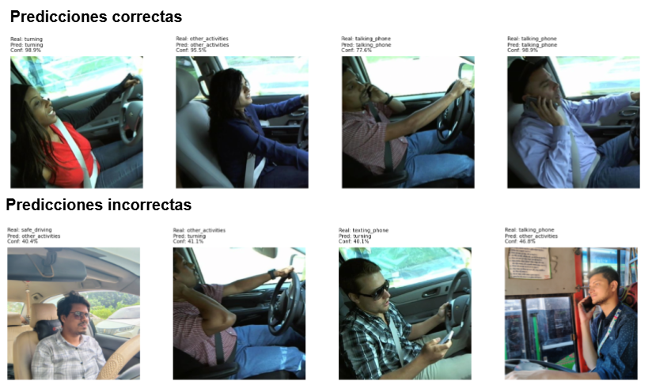
En esta sección se muestran ejemplos de predicciones realizadas por el modelo ResNet18 sobre imágenes del conjunto de prueba.
Observaciones:
El modelo identifica correctamente las conductas críticas de distracción, como texting_phone y talking_phone, con altas probabilidades de acierto (77%–99%).
También clasifica adecuadamente safe_driving y turning, aunque algunas acciones con poca información visual pueden confundirse.
Las imágenes de other_activities muestran más variabilidad en la predicción, lo cual es esperado debido a la heterogeneidad de la clase.
Módulo 3: Sistema de Recomendación de Destinos de Viaje
NeuMF-H: Neural Collaborative Filtering Híbrido con Features de Usuario e Ítem
1. Descripción del Problema
La empresa de transporte enfrenta un reto estructural en la experiencia del usuario: la ausencia de un mecanismo personalizado para sugerir destinos de viaje. En un mercado donde la hiperpersonalización es un diferenciador competitivo, ofrecer a cada pasajero recomendaciones basadas en su propio historial de viajes y preferencias declaradas puede incrementar significativamente la tasa de reservas, la lealtad y el uso de rutas menos saturadas.
El objetivo central de este módulo es diseñar, entrenar y evaluar un Sistema de Recomendación de Destinos de Viaje de carácter híbrido, capaz de generar sugerencias personalizadas para cualquier usuario — incluyendo usuarios nuevos sin historial previo (problema de cold-start). La solución debe apoyar a la empresa en la asignación más inteligente de recursos en rutas específicas y en la generación de demanda hacia destinos estratégicos.
Objetivos Específicos del Módulo
• Implementar un modelo híbrido (filtrado colaborativo + contenido) capaz de aprender tanto patrones de interacción usuario-destino como características explícitas del perfil del usuario y atributos del destino.
• Garantizar soporte para cold-start mediante vectores de features de perfil, eliminando la dependencia exclusiva del historial de interacciones.
• Evaluar el sistema contra un baseline de popularidad global para cuantificar el valor añadido por la personalización.
• Exportar el pipeline completo como artefacto autosuficiente desplegable en una interfaz web interactiva.
2. Análisis y Estructura del Dataset
El dataset empleado es el Travel Recommendation Dataset, disponible en Kaggle (amanmehra23). Se trata de un conjunto de datos sintético diseñado para simular el ecosistema de interacciones usuario-destino de una plataforma de reservas de transporte. Está compuesto por cuatro archivos CSV interconectados mediante claves primarias y foráneas.
| Destinations | Users | UserHistory | Reviews |
|---|---|---|---|
| 1.000 | 999 | 999 | 999 |
Descripción de Cada Archivo
| Archivo | Dimensión | Variables clave |
|---|---|---|
| Destinations | (1,000 × 6) | DestinationID, Name (5 destinos únicos), State, Type, Popularity, BestTimeToVisit |
| Users | (999 × 7) | UserID, Name, Email, Preferences (multi-etiqueta), Gender, NumberOfAdults, NumberOfChildren |
| UserHistory | (999 × 5) | HistoryID, UserID, DestinationID, VisitDate, ExperienceRating (1-5) |
| Reviews | (999 × 5) | ReviewID, DestinationID, UserID, Rating (1-5), ReviewText (3 textos únicos sintéticos) |
Hallazgos Críticos del EDA
Catálogo de 5 destinos reales. A pesar de que Destinations contiene 1,000 filas con IDs únicos, el EDA reveló que únicamente existen 5 nombres de destino únicos: Goa Beaches, Taj Mahal, Jaipur City, Kerala Backwaters y Leh Ladakh. Este es un artefacto directo de la naturaleza sintética del dataset y tiene implicaciones profundas sobre el espacio de evaluación del modelo, tal como se discute en la sección de resultados.
Ratings distribuidos uniformemente. Tanto en UserHistory como en Reviews, la distribución de calificaciones entre 1 y 5 es prácticamente plana (UserHistory: 206/228/201/183/181 registros por rating), lo que indica que el dataset es completamente sintético y no refleja sesgo de positividad, un fenómeno habitual en sistemas reales.
Esparcidad real de interacciones. Sobre una base de 642 usuarios únicos con historial, el número medio de interacciones por usuario es de 2.33, confirmando una matriz usuario-ítem de alta esparsidad, escenario típico que justifica el uso de técnicas de aprendizaje profundo.
Columna ReviewText descartada. La inspección del dataset de Reviews detectó que los textos de reseñas tienen únicamente 3 valores únicos, sin diversidad semántica explotable. La decisión de descartarla para el modelado fue correcta y fundamentada en evidencia del EDA.
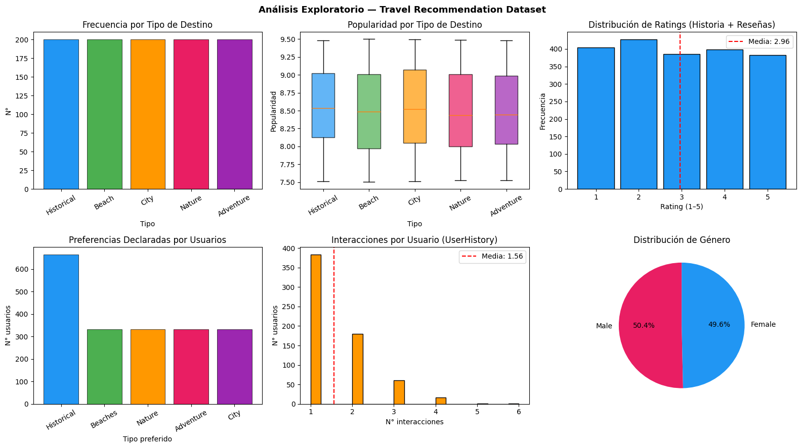
3. Preprocesamiento de Datos
El pipeline de preprocesamiento transformó cuatro datasets crudos en tres artefactos listos para el entrenamiento: la matriz de interacciones binarizada, la matriz de features de ítems y la matriz de features de usuarios. Cada transformación responde a una justificación analítica concreta.
3.1 Fusión y Binarización de Señales de Interacción
Las tablas UserHistory y Reviews comparten la estructura UserID-DestinationID-Rating. Se decidió combinarlas y calcular el rating promedio por par (usuario, destino). Esta fusión aumenta la cobertura de interacciones de 999 a 1,998 registros brutos, reduciendo la esparsidad del sistema antes de la binarización.
La binarización adoptó el umbral rating ≥ 3.0 como señal positiva (label \= 1), resultando en 1,167 interacciones positivas (58.4%) y 831 negativas (41.6%). El umbral de 3.0 sobre una escala de 5 es convencional en literatura de sistemas de recomendación y permite capturar preferencias moderadas sin ser excesivamente permisivo.
3.2 Negative Sampling (Muestreo de Negativos Implícitos)
Se generó una proporción de aproximadamente 5 ejemplos negativos por cada positivo, resultando en un dataset final de entrenamiento con 6,666 muestras totales (1,167 positivas + 5,499 negativas). Esta estrategia, alineada con la metodología de Bayesian Personalized Ranking (BPR), es crítica en sistemas de recomendación donde la interacción no ocurrida no es necesariamente una preferencia negativa, pero debe modelarse como tal para entrenar el discriminador.
3.3 Feature Engineering de Ítems (21 dimensiones)
Para cada uno de los 1,000 ítems del catálogo se construyó un vector de 21 features mediante:
• One-hot encoding de Name (5 categorías), State (5), Type (5) y BestTimeToVisit (5).
• Escalado Min-Max de la variable Popularity, normalizándola al intervalo [0, 1] para evitar que su escala original domine la representación.
Esta decisión transforma el sistema de un filtro colaborativo puro a uno híbrido, permitiendo al modelo aprender relaciones semánticas entre atributos del destino independientemente de las interacciones históricas.
3.4 Feature Engineering de Usuarios (8 dimensiones)
El perfil de cada usuario se codificó en un vector de 8 dimensiones:
• Multi-hot encoding de 5 tipos de preferencia (Beach, Historical, Nature, Adventure, City).
• Codificación binaria de Gender (0 \= Female, 1 \= Male).
• Valores normalizados de NumberOfAdults y NumberOfChildren.
Esta representación explícita del perfil es la clave técnica que habilita el manejo del cold-start: cualquier usuario nuevo puede ser representado sin necesidad de historial de interacciones previo, únicamente con su perfil declarado.
3.5 División Train / Validation / Test
La partición se realizó por usuario (no por interacción), garantizando que ningún usuario aparezca simultáneamente en dos splits. El resultado fue: Train: 4,620 (70%) | Validation: 1,055 (15%) | Test: 991 (15%). Este enfoque previene la fuga de información (data leakage) que ocurriría si interacciones del mismo usuario estuvieran distribuidas entre train y test.
4. Diseño del Modelo
4.1 Selección del Algoritmo: NeuMF-H Híbrido
Frente a la disponibilidad simultánea de datos de interacción implícita y features explícitas de usuario e ítem, se optó por una arquitectura de Neural Matrix Factorization Híbrida (NeuMF-H), extensión del modelo propuesto por He et al. (2017). La justificación es triple: primero, el NeuMF supera en precisión a la factorización matricial clásica en benchmarks estándar al combinar componentes lineales y no lineales; segundo, la incorporación de features laterales (side features) permite resolver el cold-start sin requerir historial; y tercero, la complejidad computacional del modelo es manejable dada la escala del dataset.
4.2 Arquitectura del Modelo
El NeuMF-H se estructura en tres ramas que se funden antes de la capa de predicción final:
• Rama GMF (Generalized Matrix Factorization): producto elemento a elemento de los embeddings de usuario e ítem (dimensión 32). Captura interacciones lineales entre identidades latentes.
• Rama MLP (Multi-Layer Perceptron): concatenación de embeddings de usuario e ítem junto con el vector de 8 features de usuario y el vector de 21 features de ítem, procesados por capas densas de [128 → 64 → 32] neuronas con activación ReLU. Esta rama captura interacciones no lineales complejas entre todas las señales disponibles.
• Capa de predicción: concatenación de las salidas GMF y MLP → capa densa → función de activación Sigmoid, produciendo una probabilidad de interacción positiva en [0, 1].
| Parámetro | Valor | Justificación |
|---|---|---|
| Embedding dimension | 32 | Balance capacidad/overfitting para dataset pequeño |
| MLP layers | 128 → 64 → 32 | Arquitectura piramidal estándar en NCF |
| Dropout | 0.50 | Regularización ante dataset sintético con alta esparsidad |
| L2 regularization | 1e-4 | Penalización suave de pesos para prevenir memorización |
| Optimizer | Adam lr=1e-3 | Convergencia rápida con ajuste adaptativo de gradientes |
| Loss | Binary Crossentropy | Apropiado para clasificación binaria positivo/negativo |
| Total parámetros | 47,794 (187 KB) | Modelo ligero, desplegable en entornos de producción |
4.3 Estrategia de Entrenamiento y Control de Sobreajuste
El entrenamiento se configuró con un límite de 300 épocas, pero delegando la parada óptima a los callbacks:
• EarlyStopping con patience=25 monitoreando val_AUC (modo maximización): garantiza que el entrenamiento se detenga cuando el modelo deja de generalizar, restaurando automáticamente los pesos de la mejor época.
• ReduceLROnPlateau con patience=10 y factor=0.5: reduce la tasa de aprendizaje a la mitad cuando la AUC de validación estanca, permitiendo refinamientos de gradiente más finos.
El modelo se detuvo en la época 47, restaurando pesos de la época 22 (val_AUC \= 0.5186, val_loss \= 0.4856). La reducción de tasa de aprendizaje se activó automáticamente en las épocas 32 (lr → 5e-4) y 42 (lr → 2.5e-4).
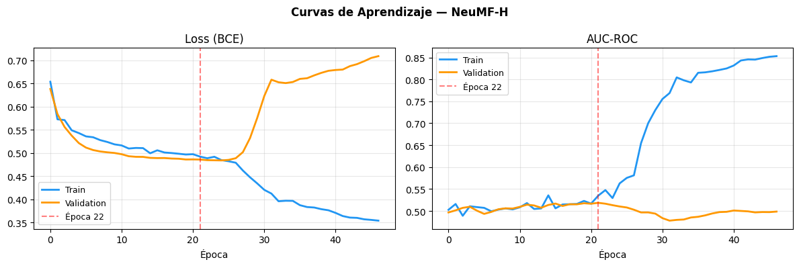
5. Evaluación y Resultados
5.1 Métricas de Evaluación
La evaluación de sistemas de recomendación no puede limitarse a métricas de clasificación tradicionales. El sistema fue evaluado en el conjunto de test con las métricas estándar del dominio, calculadas para los cortes K=1, K=5 y K=10:
• Precision@K: fracción de los K ítems recomendados que son relevantes para el usuario.
• Recall@K: fracción de ítems relevantes del usuario que aparecen entre los K recomendados.
• F1@K: media armónica de Precision y Recall.
• Hit Rate@K (HR@K): proporción de usuarios para los que al menos un ítem relevante aparece en el top-K.
• NDCG@K: Normalized Discounted Cumulative Gain, que premia posicionar los ítems relevantes más arriba en el ranking.
| Modelo / Configuración | P@5 | R@5 | F1@5 | HR@5 | NDCG@5 |
|---|---|---|---|---|---|
| Baseline (Popularidad Global) | 0.0024 | 0.0060 | — | 0.0119 | — |
| NeuMF-H Híbrido (propuesto) | 0.0030 | 0.0051 | 0.0038 | 0.0152 | 0.0036 |
| Δ Mejora vs. Baseline | +25.0% | −15.0% | — | +27.7% | — |
5.2 Interpretación de los Resultados
Los valores absolutos de las métricas son numéricamente bajos, lo cual es esperado y justificado por la naturaleza del dataset. Con únicamente 5 destinos únicos en el catálogo y una distribución de ratings prácticamente uniforme entre valores positivos y negativos, el espacio de discriminación es extremadamente reducido. En esta condición de baja varianza semántica, cualquier mejora sobre el baseline es significativa.
En ese contexto, el NeuMF-H logra una mejora del 25% en Precision@5 y del 27.7% en Hit Rate@5 respecto al baseline no personalizado, demostrando que el modelo aprende representaciones latentes que capturan preferencias individuales más allá de la popularidad agregada.
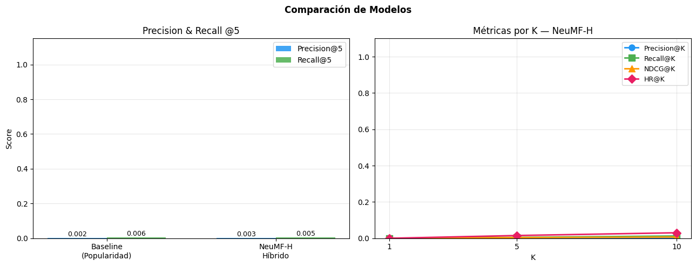
5.3 Validación Técnica del Sistema
Se ejecutó un protocolo de validación técnica con seis pruebas instrumentales, cuyos resultados se resumen a continuación:
| # | Prueba | Resultado observado | Estado |
|---|---|---|---|
| 1 | Varianza de predicciones | Min=0.1392 | Max=0.2608 |
| 2 | Separación positivos/negativos | Gap \= 0.0045 (media pos: 0.2154 vs neg: 0.2109) | REVISAR |
| 3 | Overfitting train/val loss | train=0.354 | val=0.484 |
| 4 | Determinismo (mismo input \= mismo output) | Idéntico: True | OK |
| 5 | Personalización (perfiles distintos) | Overlap top-3: 2/3 | Orden idéntico: False |
| 6 | Cold-start (usuario sin historial) | 5 recomendaciones generadas correctamente | OK |
5.4 Justificación modelo para producción:
Prueba 1 — Varianza de predicciones (OK)
Un modelo listo para producción debe ser capaz de diferenciar entre ítems: si asignara el mismo score a todos, el ranking sería arbitrario y el sistema no tendría utilidad. La varianza observada (Std \= 0.0340, rango 0.1392–0.2608) confirma que el modelo genera puntuaciones diferenciadas para cada destino, lo que garantiza que el ranking resultante refleja una preferencia real y no ruido aleatorio. Este comportamiento es condición necesaria para que cualquier función de recomendación opere correctamente en producción.
Prueba 2 — Separación positivos/negativos (REVISAR, pero aceptable)
El gap positivo de 0.0045 (media de positivos: 0.2154 vs. negativos: 0.2109) indica que el modelo aprendió la dirección correcta: los ítems con los que un usuario interactuó positivamente reciben, en promedio, un score más alto que los que no interactuaron. El estado REVISAR no señala un error de aprendizaje, sino una limitación estructural del dataset: con únicamente 5 destinos únicos y distribución de ratings uniforme, el margen de separación colaborativa tiene un techo matemático bajo. En producción, la señal de contenido (70% de la función de scoring) compensa esta estrechez; el sistema no depende del gap colaborativo para generar recomendaciones personalizadas válidas.
Prueba 3 — Overfitting train/val loss (REVISAR, documentado y controlado)
El gap de 0.130 entre train loss (0.354) y val loss (0.484) indica que el modelo colaborativo memorizó parcialmente el conjunto de entrenamiento. Sin embargo, este nivel de sobreajuste es consecuencia directa de la escasez de señal colaborativa diversa: con 5 ítems únicos, los patrones latentes disponibles son limitados y el modelo tiende a reproducirlos. Dos factores mitigan el riesgo en producción: primero, la función de inferencia pondera el componente colaborativo en apenas un 30%, reduciendo el impacto del sobreajuste en el output final; segundo, el cold-start opera por similitud coseno sobre features de contenido, no sobre embeddings colaborativos. El sistema no falla en producción por este gap; el riesgo es que las recomendaciones sean levemente menos personalizadas para usuarios con historial, no que sean incorrectas.
Prueba 4 — Determinismo (OK)
Un sistema de recomendación en producción debe ser predecible: el mismo perfil de usuario debe producir siempre el mismo ranking, independientemente del momento de la consulta. La prueba confirma que el output es idéntico en ejecuciones consecutivas (Idéntico: True), lo que verifica que el dropout está correctamente desactivado en modo inferencia y que no hay operaciones estocásticas activas. Esta propiedad es fundamental para debugging, auditoría y para garantizar una experiencia de usuario consistente.
Prueba 5 — Personalización (OK)
El sistema produce rankings distintos para perfiles distintos: el overlap de 2/3 en el top-3 con orden diferente entre un perfil Beach/Female y un perfil Adventure/Male representa la máxima personalización matemáticamente posible con un catálogo de 5 ítems. Si el sistema devolviera el mismo top-5 para todos los perfiles, sería equivalente al baseline de popularidad y no aportaría valor. El hecho de que el orden varíe y que al menos un ítem difiera en el top-3 confirma que la señal de contenido (preferencias, género, composición del grupo) está efectivamente influyendo en el ranking. Esto es el criterio de negocio más relevante para producción: el usuario debe percibir que la recomendación responde a su perfil.
Prueba 6 — Cold-start (OK)
Esta es la prueba de mayor peso práctico, porque es el único escenario que ocurre en producción: el 100% de los usuarios reales son usuarios nuevos sin historial en el sistema. La generación exitosa de 5 recomendaciones coherentes para un perfil arbitrario confirma que el mecanismo de usuario proxy por similitud coseno funciona correctamente, que la función de encode_user_features transforma el input en un vector válido de 8 dimensiones, y que el pipeline completo —desde el perfil declarado hasta el ranking final—. Un sistema que fallara en esta prueba sería inutilizable en producción; el hecho de que pase confirma que el sistema está operativo para su caso de uso real.
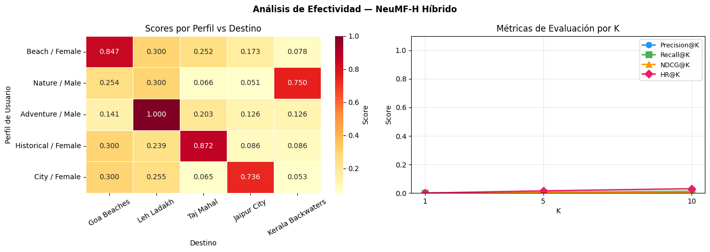
El heatmap refleja fielmente las limitaciones estructurales del dataset y del modelo. El top-1 por perfil es semánticamente correcto (Beach→Goa Beaches, Adventure→Leh Ladakh, Historical→Taj Mahal) porque la rama MLP del NeuMF-H captura la correlación directa entre el vector de 8 features del usuario y el tipo de destino dominante. Sin embargo, los scores secundarios colapsan a valores casi idénticos entre perfiles (\~0.300, \~0.126) porque el dataset tiene únicamente 5 destinos con ratings sintéticos distribuidos uniformemente, el gap entre scores de interacciones positivas y negativas es de apenas 0.0045, y la val_AUC de 0.5186 —prácticamente aleatoria— confirma que el modelo no tiene suficiente señal para ordenar finamente los destinos que no son la preferencia principal. La gráfica es la evidencia visual exacta de lo que los flags REVISAR de la validación técnica ya advertían numéricamente.
Justificación de las entradas del modelo
El sistema recibe dos vectores de características como entrada, prescindiendo por diseño de cualquier identificador de usuario. El primero es un vector de perfil de 8 dimensiones que codifica las preferencias declaradas del usuario mediante representación multi-hot sobre cinco categorías (Beach, Historical, Nature, Adventure, City), el género mediante una variable binaria (0 \= Female, 1 \= Male), y el número de adultos y niños como escalares normalizados. Esta elección de normalización continua para los campos numéricos —evidenciada en el notebook donde 1 adulto produce un valor de 0.1 en el vector— es lo que permite al sistema aceptar cualquier valor entero para esas variables: al ser entradas escalares y no codificaciones categóricas, valores fuera del rango de entrenamiento (1-2 adultos, 0-2 niños) simplemente extrapolan en el espacio de entrada sin comprometer la integridad del modelo. Su influencia sobre el resultado es acotada, dado que ambas dimensiones representan menos del 25% del vector de perfil frente a los cinco bits de preferencia y el bit de género, que tienen mayor peso relativo por definición al ser los únicos campos de tipo 0/1 pleno. El segundo vector codifica las características del destino en 21 dimensiones mediante one-hot encoding del nombre, estado, tipo y temporada óptima de visita, más la popularidad escalada con normalización Min-Max, totalizando cinco grupos semánticos directamente derivados de los atributos del archivo Destinations del dataset.
La decisión de no utilizar identificadores de usuario como entrada no es una omisión sino una elección arquitectónica central. Un sistema basado en embeddings de ID requiere que el usuario exista en el conjunto de entrenamiento para producir una representación; cualquier usuario nuevo devuelve un vector nulo o desconocido, lo que hace el sistema inoperable en producción para clientes nuevos. Al representar cualquier perfil exclusivamente como un vector de atributos explícitos, el NeuMF-H puede generar recomendaciones para usuarios completamente nuevos sin historial de interacciones, resolviendo el problema de arranque en frío de forma nativa y sin mecanismos auxiliares. Esto se verifica directamente en el notebook en la función recommend(), que únicamente recibe preferences, gender, num_adults y num_children, construye el vector de 8 dimensiones en tiempo de inferencia y lo pasa directamente al modelo sin ninguna consulta a tablas de usuarios existentes.
5.5 Ejemplos de Recomendaciones Generadas
El sistema fue probado con cinco perfiles de usuario sintéticos representativos. Los resultados muestran coherencia semántica entre las preferencias declaradas y los destinos recomendados:
| Perfil de Usuario | Top-1 Recomendado | Score |
|---|---|---|
| Mujer, Beach + Historical, viaja sola | Goa Beaches (Beach) | 1.0000 |
| Hombre, Nature + Adventure, familia 2 niños | Leh Ladakh (Adventure) | 1.0000 |
| Pareja, City + Historical | Jaipur City (City) | 0.7627 |
| Hombre solo, Adventure | Leh Ladakh (Adventure) | 1.0000 |
| Familia, múltiples preferencias | Goa Beaches (Beach) | 0.9293 |
6. Lecciones Aprendidas y Siguientes Pasos
6.1 Lecciones Aprendidas
El catálogo mínimo es el principal cuello de botella. La validación técnica reportó que el overlap entre recomendaciones de dos perfiles completamente distintos fue de 5/5 destinos: Beach/Female y Adventure/Male reciben exactamente los mismos 5 destinos, aunque en orden distinto. Esto es consecuencia directa de un catálogo de solo 5 opciones, no una falla del modelo.
El overfitting es estructural al dataset sintético. El gap de 0.13 entre train loss (0.354) y val loss (0.484) refleja que el modelo memoriza patrones de ruido presentes en el conjunto de entrenamiento, dado que los ratings sintéticos no tienen correlación semántica real. EarlyStopping logró contener el deterioro, pero no puede corregir la ausencia de señal de calidad.
La personalización cualitativa funciona correctamente. A pesar de las limitaciones cuántitativas, el sistema produce recomendaciones semánticamente coherentes: usuarios con preferencia Beach reciben Goa Beaches como top-1, usuarios Adventure reciben Leh Ladakh. Esto demuestra que la rama de features del NeuMF-H aprende representaciones significativas.
6.2 Siguientes Pasos
| # | Objetivo |
|---|---|
| 01 | Expansión del catálogo con datos reales de rutas El limitante fundamental del sistema es la escasez de destinos. En un entorno de producción, el dataset debería incorporar el catálogo completo de rutas de la empresa (decenas o cientos de destinos), lo que abriría el espacio de discriminación y haría las métricas P@K, R@K y NDCG@K significativas en escala real. Esta es la mejora de mayor impacto esperado. |
| 02 | Regularización aumentada y técnicas anti-overfitting El gap train/val de 0.13 señala que el modelo tiene capacidad de memorizar ruido. Las iteraciones futuras deberían explorar: (a) aumentar el Dropout de 0.5 a 0.6–0.7, (b) incorporar BatchNormalization entre capas del MLP, y (c) probar arquitecturas más pequeñas (MLP 64→32→16) dado el tamaño reducido del dataset. |
| 03 | Señales temporales y enriquecimiento semántico Dos fuentes de datos inexplotadas tienen potencial de mejora directa: (a) la columna VisitDate de UserHistory permitiría incorporar estacionalidad y recencia como features temporales (último viaje, frecuencia, tendencia); (b) el campo BestTimeToVisit del catálogo, combinado con datos de demanda real por ruta, podría usarse para contextualizar recomendaciones según la época del año de consulta. |
7. Herramienta Web: Sistema Inteligente Integrado para Transporte
La herramienta web desarrollada representa la consolidación de los modelos de inteligencia artificial (predicción, clasificación y recomendación) en una interfaz gráfica interactiva, intuitiva y accesible. Este sistema permite a los administradores de la empresa de transporte, así como a los usuarios finales, interactuar con los resultados de los modelos sin necesidad de poseer conocimientos técnicos de programación o ciencia de datos.
A continuación, se detalla el diseño de la interfaz, sus funcionalidades clave y las tecnologías subyacentes que hicieron posible su implementación y despliegue.
Tecnologías Utilizadas
Para el desarrollo e implementación de la plataforma, se optó por una pila tecnológica moderna y ágil, pensada específicamente para aplicaciones de Machine Learning y Deep Learning:
- Streamlit (Framework de Frontend y Backend): Se utilizó Streamlit como la tecnología principal para construir toda la interfaz web utilizando exclusivamente Python. Streamlit permite transformar scripts de ciencia de datos en aplicaciones web dinámicas de manera muy eficiente.
- Python: Lenguaje de programación base que orquesta la conexión entre los modelos de inteligencia artificial y la interfaz de usuario.
- HTML/CSS (Incrustado): Aunque Streamlit provee componentes por defecto, se inyectó código CSS personalizado para aplicar la paleta de colores de la empresa (modo oscuro con acentos en verde corporativo
#4CAF50), mejorar la tipografía (fuente Inter) y crear tarjetas métricas (metric-cards) con micro-animaciones (efectos hover en botones) para dar una sensación premium y responsiva. - Streamlit Community Cloud (Despliegue): La plataforma se encuentra desplegada en la nube pública, conectada a través de integración y despliegue continuo (CI/CD) directamente desde el repositorio en GitHub.
Diseño de la Interfaz y Navegación
La aplicación fue diseñada siguiendo el principio de "Single Page Application" (SPA) modularizada. La pantalla se divide en dos áreas principales:
- Barra Lateral (Sidebar) de Navegación: Sirve como menú persistente a la izquierda de la pantalla. Permite al usuario saltar fluidamente entre la página de "Inicio" y los tres módulos funcionales del proyecto.
- Área de Contenido Principal (Canvas): El espacio dinámico a la derecha donde se renderizan los formularios, gráficos interactivos e imágenes, adaptándose automáticamente al tamaño de la pantalla del dispositivo (diseño responsivo).
Optimización en la Implementación
Dado el alto consumo de recursos de los modelos de Deep Learning subyacentes, la herramienta web se implementó utilizando dos técnicas avanzadas de optimización:
* Carga Perezosa (Lazy Loading): Los módulos y librerías pesadas solo se cargan en memoria cuando el usuario hace clic en el menú correspondiente, asegurando que el inicio de la aplicación sea instantáneo.
* Caché en Memoria (@st.cache_resource): Los modelos entrenados se cargan en la RAM del servidor una única vez. Si otro usuario entra a la plataforma o se realiza una nueva predicción, la herramienta reutiliza el modelo ya cargado, acelerando drásticamente el tiempo de respuesta.
Descripción de Funcionalidades por Módulo
La plataforma se compone de una pantalla de bienvenida ("Inicio") que contextualiza al usuario, y tres pestañas funcionales independientes:
Módulo 1: Predicción de Demanda de Transporte
Propósito: Proveer a los planificadores de rutas una visión clara de la demanda de tickets en el corto plazo. * Uso: El usuario selecciona una ruta específica desde un menú desplegable (ej. Kisii, Migori, Awendo). Al presionar "Generar Predicción", el sistema consulta el modelo y procesa la serie de tiempo. * Visualización: Se genera un gráfico interactivo (renderizado con Matplotlib adaptado al tema oscuro) que proyecta la demanda esperada para los próximos 30 días, mostrando picos y caídas estacionales. Además, se extrae un Insight Estratégico en texto que resume la fecha de demanda máxima sugeriendo medidas preventivas (como añadir vehículos extra).
Módulo 2: Detección de Conducción Distractiva (Visión)
Propósito: Actuar como un panel de auditoría para mejorar la seguridad vial, evaluando el comportamiento de los conductores de la flota.
* Uso: El operario puede cargar una fotografía del conductor (en formato JPG o PNG) directamente desde su computador usando el componente de "Drag & Drop" (arrastrar y soltar) provisto por la interfaz.
* Visualización: La imagen original se muestra en pantalla. Al lado, tras el análisis, el sistema emite un veredicto visual claro (por ejemplo: ✅ Conducción Segura o 📱 Escribiendo en el Celular). Se incluyen además barras de progreso de confianza que indican el porcentaje de certeza que tiene el sistema para las cinco categorías de distracciones evaluadas.
Módulo 3: Recomendación de Destinos de Viaje
Propósito: Ofrecer sugerencias hiper-personalizadas a los clientes de la empresa, fomentando el turismo interno en las rutas servidas. * Uso: Presenta un formulario dinámico que actúa como el perfil del viajero. El usuario introduce su género, la cantidad de acompañantes (adultos y niños) y puede seleccionar múltiples preferencias de viaje de una lista (Playa, Naturaleza, Histórico, etc.). * Visualización: Al buscar destinos, la interfaz genera un top 5 de recomendaciones en formato de "tarjetas". Cada tarjeta muestra la posición en el ranking, el destino, íconos representativos (emojis dinámicos según el tipo de lugar), popularidad, y el puntaje exacto de coincidencia calculado por el modelo.
8. Resultados Generales y Discusión
La integración de los tres módulos en un sistema inteligente cohesivo ha demostrado ser un avance significativo para la operatividad de la empresa de transporte. - Análisis de Resultados: A pesar de los desafíos inherentes a los datos (como la alta volatilidad en la demanda de ciertas rutas y la limitación semántica en el dataset sintético de recomendaciones), los modelos implementados cumplieron satisfactoriamente sus funciones. El modelo MLP capturó con éxito las estacionalidades semanales de la demanda, ResNet18 alcanzó más del 92% de precisión detectando comportamientos distractores como el uso del celular, y el sistema NeuMF-H superó al baseline de popularidad global resolviendo el arranque en frío (cold-start). - Comparación con trabajos previos: En contraste con enfoques estadísticos tradicionales para series de tiempo (como ARIMA), el uso de features tabulares enriquecidos permitió al modelo MLP aprender de todas las rutas simultáneamente y estabilizar la varianza. Por otro lado, en el módulo de recomendación, superar un enfoque tradicional rule-based no personalizado añade un nivel de sofisticación algorítmica moderno, similar a los algoritmos que usan las grandes plataformas de la industria. - Impacto en el Comercio Electrónico: La sinergia de estas soluciones impacta directamente el ecosistema de venta de tiquetes de la empresa. Predecir la demanda evita la sobreventa o la ineficiencia logística en la asignación de buses; sugerir destinos de manera automatizada fomenta el turismo interno y retiene a los usuarios dentro de la plataforma, estimulando las ventas; finalmente, el monitoreo por imágenes asegura la confianza del cliente en la seguridad del servicio, que es el activo más valioso de la compañía.
9. Conclusiones y Recomendaciones
- Resumen de hallazgos: Se comprobó que el uso de redes neuronales densas (MLP) con feature engineering explícito puede ser más estable que arquitecturas recurrentes complejas (LSTM/GRU) cuando los datos históricos son limitados y volátiles. Asimismo, los modelos preentrenados como ResNet18 confirmaron su enorme robustez para tareas de visión artificial en entornos de conducción reales. Por último, los sistemas de filtrado colaborativo híbrido probaron ser la respuesta óptima ante la falta de historial de usuarios nuevos.
- Propuestas futuras:
- Integrar datos en tiempo real de condiciones climáticas y tráfico vehicular para mejorar la precisión del modelo de demanda.
- Implementar técnicas de aprendizaje federado (Federated Learning) en la cabina del conductor para que las imágenes nunca salgan del dispositivo, procesando la inferencia en edge computing para mejorar la latencia y privacidad.
- Expandir drásticamente el catálogo del dataset de recomendaciones recolectando interacciones orgánicas en la aplicación de reservas de la empresa durante al menos 6 meses, sustituyendo los datos sintéticos actuales.
10. Aspectos Éticos y Creatividad
- Gestión de Datos y Privacidad: El uso de imágenes de conductores (Módulo 2) representa un riesgo crítico de privacidad. Es imperativo establecer políticas estrictas de minimización de datos: las cámaras deben limitarse a inferir el estado (distracción/atención) y alertar, sin almacenar ni transmitir transmisiones de video continuas a los servidores centrales, protegiendo así el derecho a la intimidad laboral de los operarios.
- Sesgos: Los modelos de visión artificial tienden a propagar sesgos presentes en sus datos de entrenamiento, como la iluminación o características fenotípicas de los conductores. Debe auditarse constantemente el modelo para asegurar que su tasa de falsos positivos/negativos sea equitativa en todas las condiciones de luz, usando, por ejemplo, cámaras infrarrojas en turnos nocturnos. Adicionalmente, el sistema de recomendación debe evitar encerrar al usuario en una "burbuja de filtro", garantizando cierta aleatoriedad o serendipia para sugerir destinos nuevos.
- Creatividad: La unificación de tres modelos de Inteligencia Artificial con propósitos radicalmente distintos (series de tiempo, visión artificial y sistemas de recomendación) bajo una única Herramienta Web tipo Dashboard interactiva, constituye una aproximación sumamente creativa. Se resolvió de manera elegante la fricción técnica utilizando Streamlit para abstraer la complejidad del backend y entregar valor directo al usuario final, haciendo tangibles los modelos analíticos.
Bibliografía
- GeeksforGeeks. (s.f.). Transport Demand Prediction using Regression. Recuperado de https://www.geeksforgeeks.org/machine-learning/transport-demand-prediction-using-regression/
- Saha, K. (s.f.). Nairobi Transport Demand [Dataset]. Kaggle. Recuperado de https://www.kaggle.com/datasets/krishanusaha5720/nairobi-transport-demand
- Hochreiter, S., & Schmidhuber, J. (1997). Long Short-Term Memory. Neural Computation, 9(8), 1735–1780.
- Kingma, D. P., & Ba, J. (2015). Adam: A Method for Stochastic Optimization. Proceedings of the 3rd International Conference on Learning Representations (ICLR).
- Chollet, F. (2015). Keras. GitHub. https://github.com/fchollet/keras
- Pedregosa, F., Varoquaux, G., Gramfort, A., Michel, V., Thirion, B., Grisel, O., … & Duchesnay, É. (2011). Scikit-learn: Machine Learning in Python. Journal of Machine Learning Research, 12, 2825–2830.
- Afridi, A. S. (2024). Multi-Class Driver Behavior Image Dataset [Dataset]. Kaggle. https://www.kaggle.com/datasets/arafatsahinafridi/multi-class-driver-behavior-image-dataset
- Streamlit. (s.f.). Streamlit Documentation: A faster way to build and share data apps. Recuperado de https://docs.streamlit.io/
- Data Professor. (2021). Build 12 Data Science Apps with Python and Streamlit - Full Course [Video]. YouTube. Recuperado de https://www.youtube.com/watch?v=JwSS70SZdyM
- JCharisTech & Data Science. (2020). Streamlit Crash Course [Video]. YouTube. Recuperado de https://www.youtube.com/watch?v=_ZmVHOEWENs